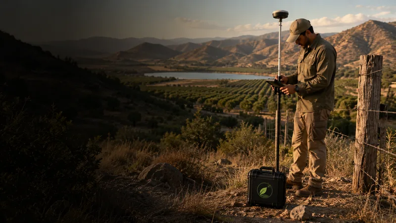

Realizar un diagnóstico de suelos rurales permite identificar limitaciones físicas, riesgos territoriales y la aptitud de suelo para el uso previsto. Antes de decidir obras, manejo predial o medidas de prevención, este diagnóstico reduce incertidumbres operacionales y apoya decisiones más seguras y eficientes. Revise criterios técnicos y documentales, y contraste resultados de terreno con la normativa y criterios de evaluación aplicables.
En resumen
- Un diagnóstico de suelos rurales debe combinar inspección de terreno, muestreo y revisión documental.
- Priorice riesgos territoriales (erosión, inundación, incendios, estabilidad) que afecten la operatividad del predio.
- La aptitud de suelo es específica al uso: caminos, infraestructura, cultivos o plantaciones requieren criterios distintos.
- Documente limitaciones y medidas mitigadoras antes de definir obras para evitar costos y riesgos operacionales.
- Consulte criterios oficiales y, cuando algo no esté claro, solicite verificación técnica del caso concreto.
1. 1. ¿Por qué hacer un diagnóstico de suelos rurales antes de decidir obras?
Un diagnóstico de suelos rurales entrega la información básica para evaluar la aptitud de suelo y las restricciones del predio frente a obras, manejo predial o medidas preventivas. Identifica condiciones que afectan la estabilidad de taludes, la capacidad portante de suelos para infraestructura ligera o pesada, la susceptibilidad a encharcamientos y la potencial erosión.
Además de las observaciones físicas, conviene contrastar hallazgos con criterios de evaluación aplicables a proyectos y actividades; revisar los criterios del SEA sobre evaluación de impactos y las orientaciones de gestión territorial de CONAF ayuda a orientar la interpretación técnica y los requerimientos de mitigación. Cuando haya dudas sobre cómo aplicar esos criterios al caso concreto, recomiende revisar el expediente con un profesional o la autoridad correspondiente.
Punto clave
por-que-diagnostico
2. 2. Inspección de campo: qué observar y cómo priorizar
La inspección en terreno es la base del diagnóstico de suelos rurales. Priorice observar:
- Topografía y pendientes: lugares con pendientes continuas o quebradas pueden aumentar riesgos de deslizamiento y erosión.
- Hidrología superficial: drenaje, presencia de caudales estacionales, encharcamientos y zonas con humedales temporales.
- Textura y estructura del suelo: arenas, limos o arcillas tienen comportamientos distintos frente a compactación y drenaje.
- Signos de deterioro: grietas, escorrentías concentradas, colapsos de cunetas o asentamientos previos.
- Accesos y condiciones operacionales: caminos existentes, capacidad de paso en temporada húmeda y puntos críticos para maquinaria.
Registre fotografías georreferenciadas y priorice puntos para muestreo. Para apoyo en servicios técnicos, consulte ../servicios.html.
Punto clave
inspeccion-terreno
3. 3. Muestreo y análisis: cómo exigir información útil sobre los suelos de un predio
Un diagnóstico riguroso combina observación con muestreo representativo. Defina una estrategia de muestreo que cubra las unidades identificadas en terreno (valles, pendientes, sectores planos, zonas ribereñas). Documente ubicación, profundidad y condiciones al momento del muestreo.
Solicite análisis de laboratorio que permitan caracterizar textura, contenido de materia orgánica, granulometría y comportamiento frente al agua (capacidad de retención, drenaje). Evite pedir pruebas sin especificar su objetivo: adapte los ensayos a la decisión que tomará (construcción de caminos, ubicación de infraestructura, manejo de suelos para producción).
Si hallazgos técnicos no encajan con los criterios regulatorios o de evaluación, recomiende una revisión del caso concreto con profesionales y la autoridad correspondiente.
Punto clave
muestreo-analisis
4. 4. Identificación de riesgos territoriales y determinación de aptitud de suelo
Los riesgos territoriales afectan la viabilidad operativa y la seguridad. En el diagnóstico deben evaluarse, entre otros:
- Inundación y depósitos aluviales: presencia de planicies de inundación o cauces activos.
- Estabilidad de pendientes: signos de deslizamiento o falla de taludes.
- Susceptibilidad a incendios: condiciones del paisaje y acceso para control, en línea con orientaciones de gestión territorial de CONAF.
- Salinización y alcalinidad: factores que limitan ciertos usos agrícolas o de plantación.
La aptitud de suelo para un uso específico debe quedar descrita con claridad: qué sectores son aptos, cuáles requieren obras de mitigación y cuáles deberían evitarse. Si la evaluación de aptitud implica interpretación regulatoria, recomiende contrastar con los criterios de evaluación del SEA y, si procede, solicitar asesoría técnica especializada.
Punto clave
aptitud-riesgos
5. 5. De los resultados a la decisión: plan de obras, manejo predial y medidas de prevención
Con los hallazgos del diagnóstico de suelos rurales se debe confeccionar un plan que vincule riesgos y medidas. Elementos prácticos a incluir:
- Zonificación de uso: sectores aptos, condicionados y no aptos según la aptitud de suelo y riesgos identificados.
- Acciones mitigadoras: estabilización de taludes, mejoramiento de drenaje, franjas de protección y diseño de accesos según condiciones estacionales.
- Programación de obras: priorizar épocas de baja humedad para labores que compactan o movilizan suelo.
- Plan de emergencia y prevención: rutas de evacuación, puntos de acceso para equipos y medidas contra incendios alineadas con la gestión territorial.
No asuma que una medida técnica garantiza aprobaciones; verifique requisitos administrativos y de evaluación aplicables a su iniciativa y, si necesita apoyo para ejecutar el diagnóstico o implementar medidas, contacte a nuestro equipo en ../contacto.html.
Si necesitas apoyo para este análisis, revisa nuestros diagnóstico de suelos, fuego y riesgos.
Punto clave
de-resultados-a-decision
En DPZ Consulting abordamos la diagnóstico de suelos, fuego y riesgos como un servicio acotado, con producto, plazo y alcance definidos.
Fuentes y referencias
Revisamos estas fuentes oficiales para preparar este contenido. La normativa puede actualizarse; verifica siempre el caso concreto antes de ejecutar un proyecto.
Preguntas frecuentes
¿Cuándo es necesario actualizar un diagnóstico de suelos rurales?
Actualice el diagnóstico si cambian las condiciones de uso del predio, se realizan obras que alteran el suelo o ocurren eventos extremos (inundaciones, deslizamientos, incendios). Cada situación merece revisar la representatividad del muestreo y las conclusiones previas; si no está seguro, solicite verificación técnica del caso concreto.
¿Puedo usar un solo punto de muestreo para todo el predio?
No es recomendable. Los suelos de un predio suelen variar por topografía, hidrología y cobertura; por eso se requieren puntos de muestreo que representen las unidades observadas en terreno. Una estrategia de muestreo mal diseñada puede generar decisiones erradas sobre aptitud y mitigación.
¿Qué relación tiene este diagnóstico con la evaluación ambiental?
El diagnóstico de suelos rurales aporta información técnica relevante para la evaluación de impactos, pero la necesidad de trámites o exigencias específicas depende de la escala del proyecto y de los criterios de evaluación aplicables. Revise los criterios de evaluación del SEA y, ante incertidumbres sobre requisitos, considere asesoría técnica y legal para su caso.